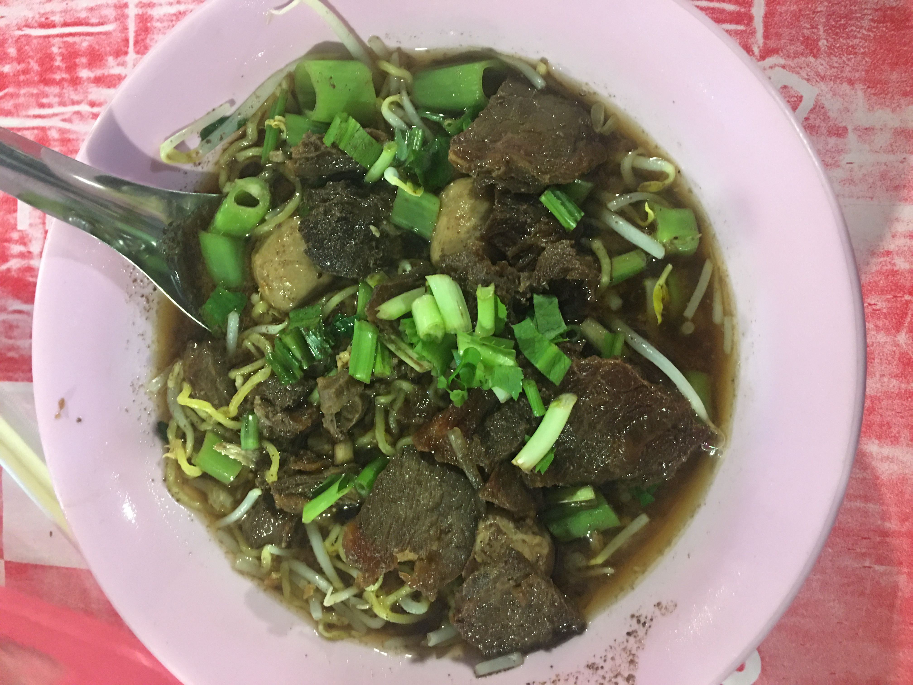
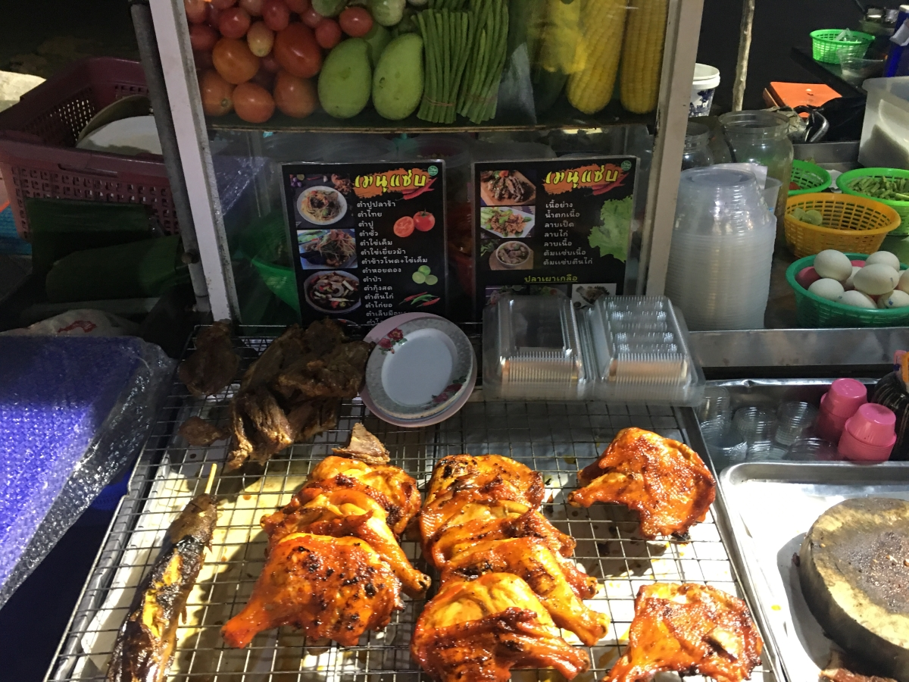

(Khao-Soi)
(Khao-Soi)
Ingredients
- 200g egg noodles
- 200g chicken thighs, cut into pieces
- 2 cups coconut milk
- 2 cups chicken broth
- 2 tbsp red curry paste
- 1 tbsp yellow curry powder
- 1 tbsp soy sauce
- 1 tbsp fish sauce
- 1 tbsp sugar
- 1 lime, cut into wedges
- Fresh cilantro, chopped
- Pickled mustard greens
- Fried crispy noodles (optional)
- Shallots, sliced
- Chili oil (optional)
Instructions
-
Cook the egg noodles according to package instructions, then drain
and set aside.
-
In a pot, heat coconut milk and bring to a boil. Add red curry
paste and yellow curry powder, stirring until fragrant.
- Add chicken pieces and cook until they turn white.
-
Pour in chicken broth, soy sauce, fish sauce, and sugar. Simmer
for 15-20 minutes until the chicken is fully cooked.
-
Serve the curry over cooked noodles, garnish with lime wedges,
cilantro, pickled mustard greens, fried crispy noodles, shallots,
and chili oil.
 (Sai Oua)
(Sai Oua)
Ingredients
- 500g ground pork
- 1 stalk lemongrass, finely chopped
- 5 kaffir lime leaves, finely chopped
- 3 cloves garlic, minced
- 1 inch galangal, minced
- 2 red chilies, minced
- 1 tbsp fish sauce
- 1 tbsp soy sauce
- 1 tsp turmeric powder
- Natural sausage casings
Instructions
-
In a large bowl, mix ground pork with lemongrass, kaffir lime
leaves, garlic, galangal, red chilies, fish sauce, soy sauce, and
turmeric powder.
- Stuff the mixture into sausage casings.
-
Grill the sausages over medium heat until fully cooked, turning
occasionally for about 20-30 minutes.
- Slice and serve with sticky rice and fresh vegetables.
 (Som Tum)
(Som Tum)
Ingredients
- 1 green papaya, shredded
- 2 tomatoes, cut into wedges
- 2 cloves garlic, minced
- 2-3 bird's eye chilies, minced
- 2 tbsp fish sauce
- 1 tbsp lime juice
- 1 tbsp palm sugar
- 2 tbsp peanuts, toasted
- 1-2 long beans, cut into pieces
Instructions
-
In a mortar and pestle, pound garlic and chilies until crushed.
-
Add shredded papaya, tomatoes, and long beans. Lightly pound and
mix.
- Add fish sauce, lime juice, and palm sugar. Mix well.
- Top with toasted peanuts and serve immediately.
 (Larb)
(Larb)
Ingredients
- 500g minced pork or chicken
- 2 tbsp fish sauce
- 2 tbsp lime juice
- 1 tbsp roasted rice powder
- 1-2 red chilies, minced
- 2 shallots, sliced
- Fresh mint leaves
- Fresh cilantro, chopped
- Green onions, sliced
Instructions
-
In a pan, cook the minced meat over medium heat until fully
cooked. Drain any excess liquid.
- Remove from heat and let it cool slightly.
-
Add fish sauce, lime juice, roasted rice powder, and red chilies.
Mix well.
- Stir in shallots, mint leaves, cilantro, and green onions.
- Serve with fresh vegetables and sticky rice.
 (Pad-Ka-Phrao)
(Pad-Ka-Phrao)
Ingredients
- 300g minced pork or chicken
- 1 cup Thai holy basil leaves
- 4 cloves garlic, minced
- 3 bird's eye chilies, minced
- 2 tbsp soy sauce
- 1 tbsp fish sauce
- 1 tsp sugar
- 1 tbsp vegetable oil
- Fried egg (optional)
Instructions
-
In a pan, heat oil over medium heat. Add garlic and chilies, and
stir-fry until fragrant.
- Add minced meat and cook until fully cooked.
- Add soy sauce, fish sauce, and sugar. Stir well.
- Add Thai holy basil leaves and stir-fry until wilted.
- Serve over rice with a fried egg on top if desired.

(Kuay-Teow)
Ingredients
- 200g rice noodles
- 200g beef or pork, thinly sliced
- 4 cups beef or pork broth
- 1 tbsp soy sauce
- 1 tbsp fish sauce
- 1 tsp sugar
- 2 cloves garlic, minced
- Bean sprouts
- Green onions, sliced
- Fresh cilantro, chopped
- Lime wedges
- Chili flakes (optional)
Instructions
-
Cook the rice noodles according to package instructions, then
drain and set aside.
-
In a pot, heat broth and bring to a simmer. Add soy sauce, fish
sauce, sugar, and garlic.
- Add the sliced meat and cook until fully cooked.
- Serve the broth and meat over cooked noodles.
-
Garnish with bean sprouts, green onions, cilantro, lime wedges,
and chili flakes if desired.

(gai yang)
Ingredients
- 1 whole chicken, butterflied
- 2 tbsp fish sauce
- 2 tbsp soy sauce
- 1 tbsp sugar
- 1 tbsp garlic, minced
- 1 tbsp lemongrass, minced
- 1 tsp black pepper
Instructions
-
In a bowl, mix fish sauce, soy sauce, sugar, garlic, lemongrass,
and black pepper.
- Marinate the chicken in the mixture for at least 2 hours.
-
Grill the chicken over medium heat until fully cooked, turning
occasionally.
- Serve with sticky rice and som tum (green papaya salad).
 (Kua Kling)
(Kua Kling)
Ingredients
- 300g minced pork or beef
- 2 tbsp southern-style curry paste
- 2 tbsp fish sauce
- 1 tbsp sugar
- 3 kaffir lime leaves, finely sliced
- Fresh vegetables (for serving)
Instructions
-
In a pan, cook the minced meat over medium heat until fully
cooked. Drain any excess liquid.
- Add southern-style curry paste and stir-fry until fragrant.
- Add fish sauce and sugar, mixing well.
- Add finely sliced kaffir lime leaves.
- Serve with fresh vegetables and steamed rice.
 (Penang Curry)
(Penang Curry)
Ingredients
- 500g beef or chicken, sliced
- 2 tbsp Penang curry paste
- 1 can (400ml) coconut milk
- 1 cup beef or chicken broth
- 2 tbsp fish sauce
- 2 tbsp palm sugar or brown sugar
- 1-2 red chilies, sliced (optional for extra heat)
- 6 kaffir lime leaves, torn into pieces
- 1 tbsp vegetable oil
- Fresh basil leaves (for garnish)
- Cooked jasmine rice (for serving)
Instructions
-
Heat vegetable oil in a large pan or wok over medium heat. Add
Penang curry paste and sauté until fragrant.
-
Add sliced beef or chicken and cook until browned on all sides.
-
Pour in the coconut milk and beef or chicken broth. Stir well to
combine.
-
Add fish sauce, palm sugar, and kaffir lime leaves. Stir and bring
to a simmer.
-
Let the curry simmer for 15-20 minutes, or until the meat is
tender and the sauce has thickened slightly.
- For extra heat, add sliced red chilies if desired.
- Garnish with fresh basil leaves before serving.
- Serve hot with jasmine rice.
 (Gaeng Som)
(Gaeng Som)
Ingredients
- 200g fish fillets, cut into pieces
- 1 cup green papaya, shredded
- 2 cups water
- 2 tbsp tamarind paste
- 2 tbsp red curry paste
- 1 tbsp fish sauce
- 1 tbsp sugar
- 1 cup vegetables (such as carrot, long beans)
Instructions
-
In a pot, bring water to a boil. Add red curry paste and tamarind
paste, stirring until dissolved.
- Add fish sauce and sugar, adjusting to taste.
-
Add fish fillets and vegetables. Simmer until cooked through.
- Add shredded green papaya and cook for another 2-3 minutes.
- Serve hot with steamed rice.